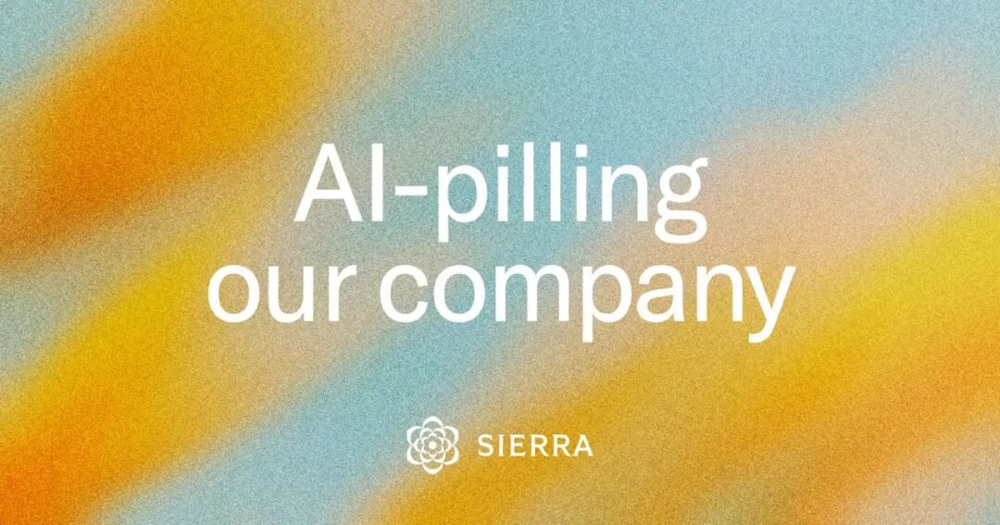
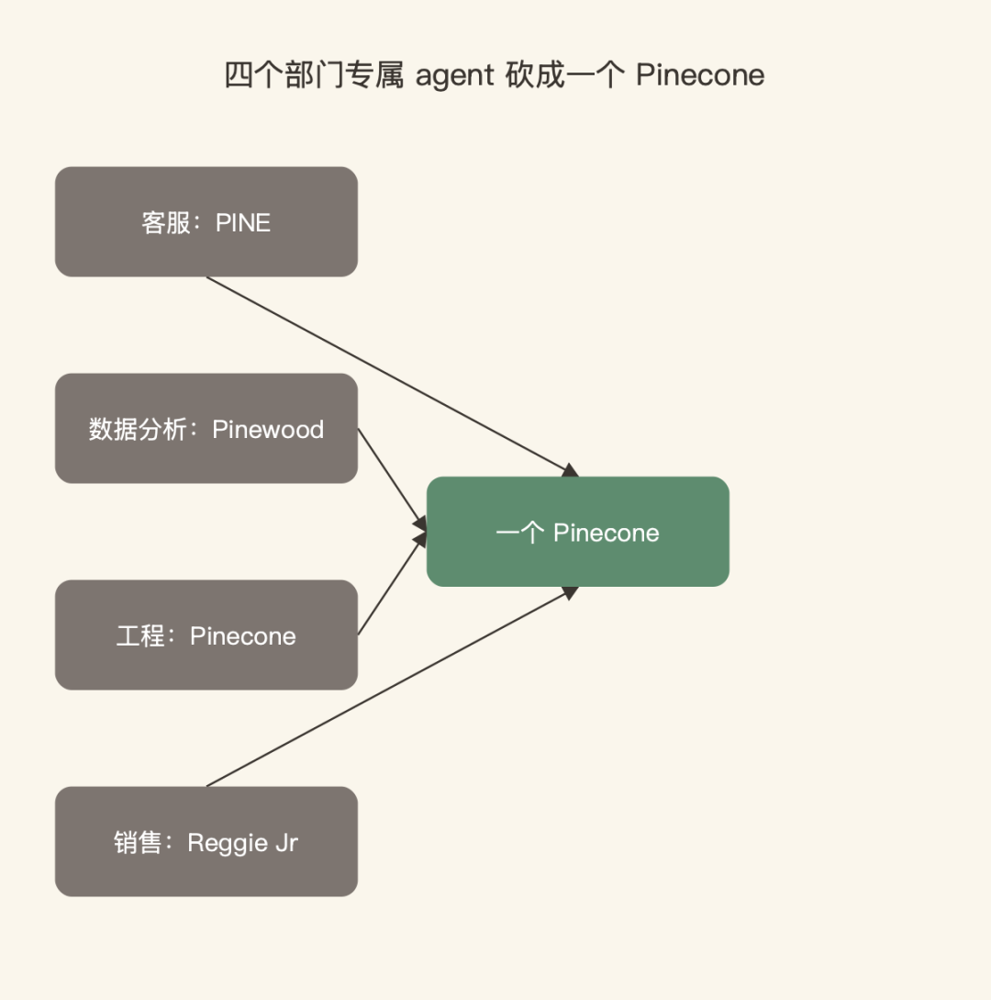
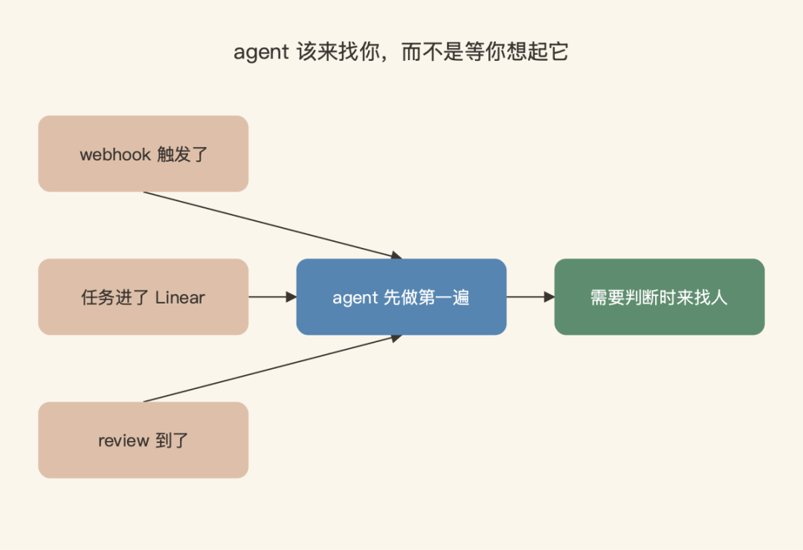
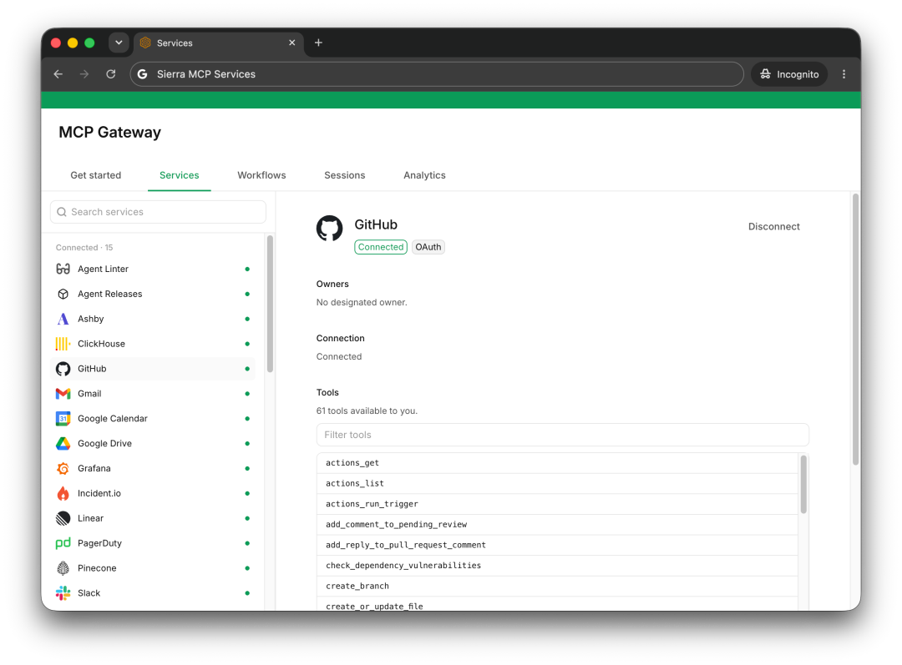
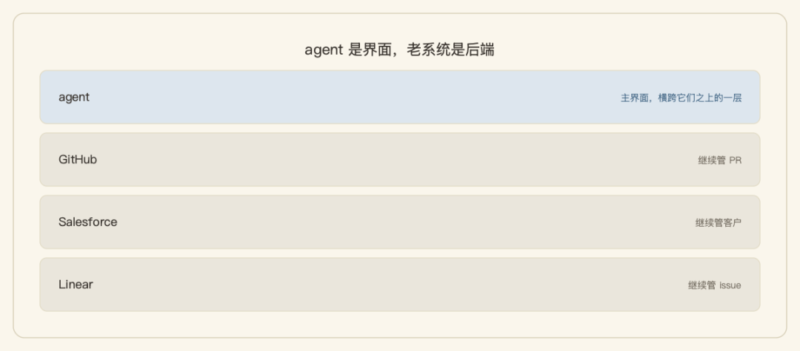
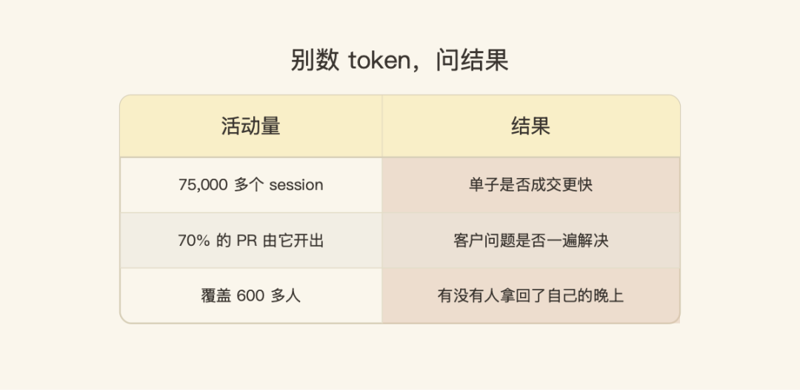

1968 年，一项后来被硅谷引用了几十年的研究发现：最好的软件工程师，产出是普通同行的 10 倍。此后半个世纪，科技公司做的其实是同一件事：把那批稀有的人找出来，抢回家。
今年，Bret Taylor（OpenAI 董事长、前 Salesforce 联席 CEO）创办的 agent 公司 Sierra 给出了另一个答案。一月假期回来，他们的工程团队被新一代 frontier model 彻底折服，开始用 git worktrees + Claude Code + Codex 并行跑 agent，部分任务的产出直接翻到 5 倍。
于是一个更大的问题摆上桌面：既然工程师一个月就能提效这么多，要让全公司 600 多人都到这个水平，需要做什么？他们组了一个六人 AI 加速团队专门干这件事。7 月 9 日，长期在 Mixpanel 负责产品与设计、如今在 Sierra 做工程的 Neil Rahilly，把这场实验写成复盘，发在 Sierra 官方博客上，标题《AI-pilling our company: lessons learned》。
先给结果：内部统一 agent Pinecone 从三月的第一个 commit 到现在，跑了 75,000 多个 session，覆盖 600 多人，公司 70% 的 PR 由它开出。但比数字更值钱的是踩坑换来的五条经验。几乎每一条，都跟大多数公司的直觉相反。

一、一个 agent，而不是每个部门一个
Sierra 一开始的做法跟所有人一样：按角色做了一组专属 agent，客服的叫 PINE，数据分析的叫 Pinewood，工程的叫 Pinecone，销售的叫 Reggie Jr。看起来天经地义，实践里失败了。
表面的问题是员工记不住哪个 agent 管什么。深层的问题是结构性的：最重要的工作发生在团队之间，而不是团队内部。
公司本质上是一堆"要完成的事"。发布一个产品，涉及技术，也涉及销售、市场、法务、运营。部门之所以存在，是因为过去没有任何一个人能独立干完整条链。AI 正在改变这个前提：它越来越能把一件事端到端做完。
所以他们把四个 agent 砍成了一个 Pinecone：一个 Slack 账号，一个 URL，一条从提问到交付的完整线程。该查哪些系统、该怎么拆这个请求，agent 自己想，员工不用管。Rahilly 把这层意思压成了一句话：

"That's technically hard, but that's the point of AI: technology absorbs the complexity, not the employee."
这在技术上很难，但这正是 AI 的意义：让技术吸收复杂度，而不是让员工吸收。
这一条我特别有体感。我们内部推 AI 工具的第一反应，也是给每个职能配一个专属助手：客服一个、数据一个、运营一个，一人一个"数字分身"，听起来直觉又好汇报。但站在用户视角想一秒就穿帮：你想报销一笔差旅，得先想清楚该找 HR 群还是财务群，找错了就被踢皮球。把这套组织摩擦原样复制进 AI，等于白装。
二、agent 该来找你，而不是等你想起它
大多数工作不是一次做完的，它随着优先级变化、新信息出现，在几天几周里逐步展开。一个被 prompt 才出现、session 结束就消失的 agent，用处终归有限。Pinecone 持续存在于整个过程：context 带着走，线头随时捡起来，直到"这件事"完成，而不是"这次对话"结束。
持续，才可能主动。webhook 触发了、任务进了 Linear、review 到了，它先做第一遍：会前准备笔记提前就位，面试评语在你坐下打分之前已经起草好，review 送到时带着摘要、风险点和建议评论。目标不是更多通知，是让砸到你手上的半成品活儿变少。

Rahilly 也诚实：这条还没做到，大部分 session 仍然是人先开口。但方向已经指明：把 prompt 关系倒转过来，agent 在需要人的判断时来 prompt 人。
这个形态像一个真正靠谱的项目经理：不是你每次催他才动一下，而是事情到了节点自己往前推，只在需要拍板时来找你。今天市面上绝大多数"AI 助手"，还是前者。
三、瓶颈是业务 context，不是模型智能
模型够不够聪明，曾经是 AI 项目的第一瓶颈。Rahilly 的判断是：这一页翻过去了。frontier model 的能力已经够大多数业务用了，瓶颈挪到了 context——你公司特有的工作流、历史，和那些不在任何训练集里的判断。
证据是一月的一次 hack：团队两个人用 Claude Code 加 Opus 4.6，通过 MCP 和命令行工具接进内部系统，攒出一个数据分析 agent。几乎不用额外指导，它就能在几分钟内横跨 Slack、GitHub、ClickHouse、Salesforce、PagerDuty 查完一个客户问题。这活儿过去要耗一个下午。
这跟新员工入职是一回事。名校毕业的聪明人，第一个月照样干不了活：缺的不是智商，是公司黑话、历史决策、谁管什么事。agent 也一样，智力是模型自带的，"入职培训"得你自己给。
但"给全量 context"马上撞上安全问题：一个不受限的 agent，就是一个巨大的隐私和权限窟窿。Sierra 的解法是 MCP Gateway：agent 继承每个员工本人的权限，每次工具调用都过策略检查，隔离客户数据，留审计痕迹，目前接了 37 个系统。

这张图值得多看一眼：不是概念图，是真跑着的控制台。侧栏里这个员工视角只连着 15 个服务——恰好说明权限是跟着人走的。agent 不需要超级账号，它就是你，你能看的它才能看。
另一条容易被忽略：Pinecone 构建在 Claude Code 和 Codex 之上，按任务路由，规划、编码、文字各有各的最强模型，宕机时互为备份。他在文里下了个判断：
"The durable advantage isn't owning the underlying model. It's owning the context, workflows, and routing layer that make every model more useful."
持久的优势不在于拥有底层模型，而在于拥有那层让每个模型都更有用的 context、工作流和路由。
他们还在实验让 Pinecone "dream"：每天复盘自己干的活，给自己的 skill 提改进建议。这个词不是随便用的，Dreaming 在 agent 记忆研究里是一条正经技术线：让 agent 在空闲时把当天的 context 蒸馏成长期记忆。Sierra 把它落到了公司内部工具上。
四、agent 是界面，老系统是后端
每项工作都会产出一个具体的东西——artifact。coding agent 最先找到了自己的：pull request。其他部门各有对应物：合同、RFP 问卷、pitch deck、绩效评估。
artifact 既是输入也是输出。让 Pinecone 改 pitch deck，回来的是改好的 deck 本身，不是一条"建议你改这三处"的聊天消息。
更关键的取舍是：不替换 system of record。GitHub 继续管 PR，Salesforce 继续管客户，Linear 继续管 issue，agent 是横跨它们之上的一层。替换意味着重造几十年的成熟软件；更糟的是公司会被劈成两半：一半人靠 agent 干活，一半人守着原工具，各有各的"真相版本"。

他们的押注是：这些系统会越来越像后端，agent 成为主界面。就像银行的核心账务系统几十年没换，但你已经很多年没去过柜台了，App 成了你唯一接触的"银行"。
五、别数 token，问结果
75,000 个 session、600 人、70% 的 PR——这组数字很好看，Rahilly 却在文章结尾亲手把它拆了：这些是活动量，不是结果。他用了个词叫 tokenmaxx：
"A team can tokenmaxx its way to an impressive-looking adoption chart without anything downstream actually getting better."
一个团队完全可以靠狂刷 token 用量，刷出一张漂亮的采用率曲线，而下游没有任何东西真正变好。
错误一样多，周期一样长，只是产生它们的过程里多了些 AI。这跟只考核拜访量的销售团队一个道理：指标立错了，你收获的就是刷指标的行为本身。
但他没有全盘否定：token 用量是合格的起点，习惯没养成之前，谈不上衡量效果。真正的问题是"因为它，什么变了"：单子是否成交更快，客户问题是否一遍解决，有没有人拿回了自己的晚上。

Sierra 自己也还没法量这个，数 session 只是因为它容易数。但"能测的"和"在乎的"之间这条沟，就是他们下一步要填的。
六、我的判断
五条经验，我按"值得抄的紧迫度"重排一下。
最该立刻抄的是第一条和第五条，因为它们不花钱，只花认知。砍掉部门专属 agent、把 KPI 从使用率换成结果指标，都是组织决策，不是技术投入。我见过不少团队把"AI 使用率"当季度指标，一季度下来曲线很漂亮，但去问业务侧"哪个环节因为 AI 变快了"，答案支支吾吾。这就是 tokenmaxx 的前夜。
最值得投入的是第三条。context 整合是真门槛：MCP Gateway 那张截图背后，是把几十个系统接进来、还要把权限模型捋顺的苦活。但它也是壁垒所在：模型人人都租得到，你的业务 context 只有你有。那句"持久优势不在模型，在 context、工作流和路由层"，值得每个做内部 AI 平台的团队贴在墙上。
最需要冷静看的是那组数字。75k session、70% PR 是厂商自报，没有第三方验证，而且 Sierra 是一家 600 人的 AI 原生公司，工程师密度极高，它的路径不能直接套到几千人、多业务线的传统组织上。抄作业之前，先看清自己的前提条件。
回到 1968 年那个 10 倍差距。五十年来的答案是"找到那批稀有的人"，现在的答案变成了"给每个人一个 agent"。但 agent 人人都买得起，真正的分水岭在于：谁先把公司的 context 变成 agent 能用的形状，谁先把指标从"用了多少"换成"变好了什么"。